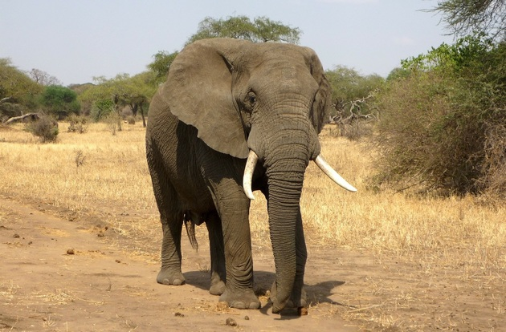
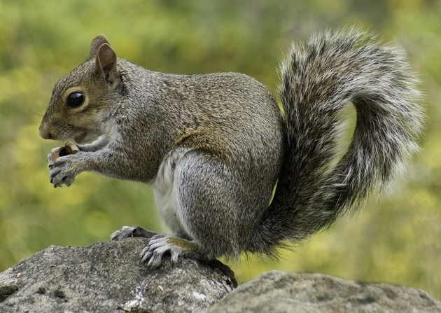

Elefante
Elephas maximus
| Reino: | Animalia |
| Classe: | Mammalia |
Elefante é o termo genérico e popular pelo qual são denominados os
membros da família Elephantidae, um grupo de mamíferos proboscídeos elefantídeos,
de grande porte, do qual há três espécies no mundo atual, duas africanas (Loxodonta sp.) e uma
asiática (Elephas sp.). Há ainda os mamutes (Mammuthus sp.), hoje extintos. Até
recentemente, acreditava-se que havia apenas duas espécies vivas de elefantes, o elefante-africano e o
elefante-asiático, uma espécie menor. Entretanto, estudos recentes de DNA sugerem que havia, na verdade,
duas espécies de elefante-africano: Loxodonta africana, da savana, e Loxodonta cyclotis,
que vive nas florestas. Os elefantes são os maiores animais terrestres da actualidade, com a massa entre 4 a
6 toneladas e medindo em média quatro metros de altura, podem levantar até 10.000 kg. As suas
características mais distintivas são as presas de marfim.
Os elefantes são animais herbívoros, alimentando-se de ervas, gramíneas, frutas e
folhas de árvores. Dado o seu tamanho, um elefante adulto pode ingerir entre 70 a 150 kg de alimentos por
dia. As fêmeas vivem em manadas de 10 a 15 animais, lideradas por uma matriarca, compostas por várias
reprodutoras e crias de variadas idades. O período de gestação das fêmeas é longo (20 a 22 meses), assim
como o desenvolvimento do animal que leva anos a atingir a idade adulta. Os filhotes podem nascer com 90 kg.
Os machos adolescentes tendem a viver em pequenos bandos e os machos adultos isolados, encontrando-se com as
fêmeas apenas no período reprodutivo.
Devido ao seu porte, os elefantes têm poucos predadores. Exercem uma forte
influência sobre as savanas, pois mantêm árvores e arbustos sob controle, permitindo que pastagens dominem o
ambiente. Eles vivem cerca de 60 anos e morrem quando seus molares caem, impedindo que se alimentem de
plantas.
Os elefantes-africanos são maiores que as variedades asiáticas e têm orelhas mais
desenvolvidas, uma adaptação que permite libertar calor em condições de altas temperaturas. Outra diferença
importante é a ausência de presas de marfim nas fêmeas dos elefantes asiáticos.
Durante a época de acasalamento, o aumento da produção de testosterona deixa os
elefantes extremamente agressivos, fazendo-os atacar até humanos. Acidentes com elefantes utilizados em
rituais geralmente são causados por esse motivo. Cerca de 400 humanos são mortos por elefantes a cada ano.
Esquilo
Ciurus vulgaris
| Reino: | Animalia |
| Classe: | Mammalia |
Os esquilos pertencem a uma grande família de mamíferos roedores,
de pequeno e médio porte, conhecida como Sciuridae. No Brasil, são também conhecidos como
serelepe, caxinguelê, caxinxe,
quatimirim, quatipuru, agutipuru ou
acutipuru. Na Galiza e em algumas zonas de Portugal, também
é conhecido por esquio. Os esquilos estão espalhados por quase todo o mundo, a maioria nas
zonas de climas temperado ou tropical, mas também em algumas zonas de clima frio. Como todos os roedores,
possui presas fortíssimas, com que roem facilmente sementes, principalmente bolotas.
As sementes são as principais fontes de alimentação, mas também consomem insetos e
frutas. Quando coletam alimento, enterram algumas sementes que encontram, sendo que algumas chegam a
germinar, como pinhões e coquinhos, acabando por plantar árvores como araucária e jerivá.
Constroem ninhos com folhas e galhos para abrigarem as suas crias da chuva e do
vento, em ramos muito altos, em árvores como a cajarana. Durante a gestação, os pais preparam o ninho para
receber os filhotes que variam de 3 a 10 por ninhada. Quando adulto, as maiores espécies da família chegam a
medir de 53 a 73 cm de comprimento (com a cauda).